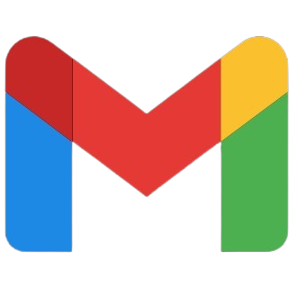
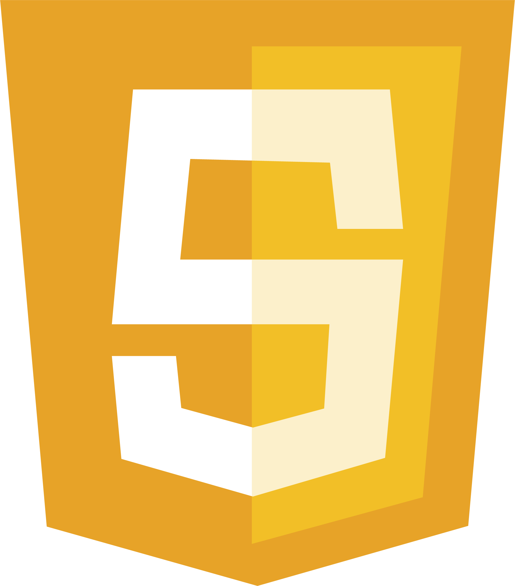
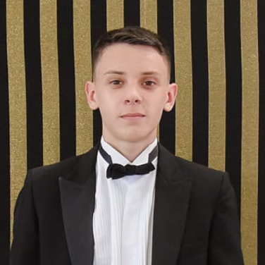
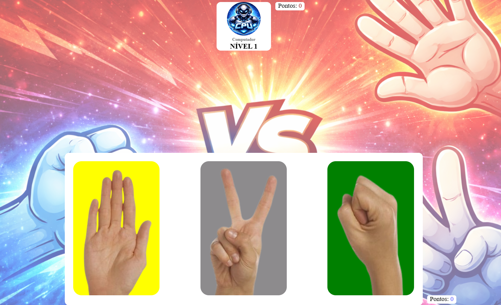
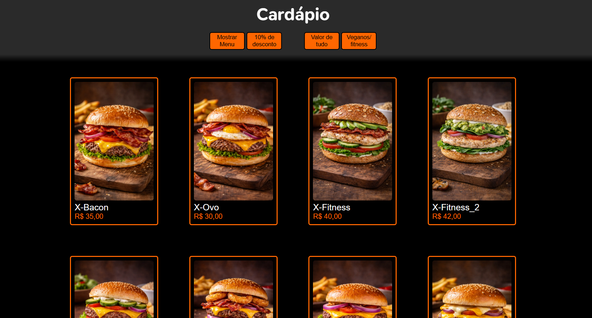

HTML

CSS

JS
Luan Fassina

Luan Pedro Fassina
Desenvolvedor Front-End
👉 Sou desenvolvedor front-end em formação, com foco na criação de interfaces modernas,
funcionais
e bem estruturadas. Tenho interesse em transformar ideias em experiências visuais claras, priorizando
organização de código, responsividade e usabilidade.
Atualmente estudo e pratico HTML, CSS e JavaScript, aplicando esses conhecimentos em projetos próprios para
consolidar a base do desenvolvimento web. Tenho facilidade em aprender novas tecnologias, boa familiaridade
com ferramentas digitais e gosto de entender como as coisas funcionam “por trás” da interface.
Valorizo disciplina, consistência e evolução contínua. Busco sempre melhorar meus projetos, tanto no aspecto
visual quanto técnico, mantendo atenção aos detalhes sem perder a visão geral do produto final.
Meu objetivo é crescer na área de desenvolvimento web, adquirindo experiência prática e construindo soluções
cada vez mais sólidas e bem pensadas.
HTML
CSS

JS

Conversor de Moedas
HTML, CSS e JS
👉 Este conversor de moedas foi desenvolvido como um desafio pessoal para criar
algo além do básico e aplicar meus conhecimentos em front-end. O projeto permite a conversão entre
diversas moedas importantes, como Real, Dólar, Euro, Libra, Peso Argentino, Colombiano e Mexicano, além
de moedas do Catar, China, Japão, Rússia, entre outras.
O funcionamento é simples: o usuário seleciona a moeda de origem, a moeda de destino, informa o valor
desejado e realiza a conversão com um clique. O maior desafio do projeto foi organizar a lógica de
conversão em JavaScript, associando corretamente cada moeda aos seus valores.
Mesmo com experiência inicial em JavaScript, o projeto demonstra minha capacidade de enfrentar desafios,
aprender durante o processo e evoluir tecnicamente. No futuro, pretendo aprimorá-lo com um design mais
moderno e a inclusão de novas moedas.

Jokempô
HTML, CSS e JS
👉 Este jogo de Jokempô foi desenvolvido como um desafio pessoal para praticar lógica de
programação e aprofundar meus conhecimentos em JavaScript, utilizando apenas HTML, CSS e JavaScript
puro. O projeto simula partidas entre o usuário e o computador, com escolhas aleatórias de pedra, papel
ou tesoura.
O jogo conta com um sistema de níveis, no qual o jogador avança ao vencer o computador por 5 pontos. A
cada novo nível, o oponente muda visualmente, mantendo a mesma lógica de jogo. Caso o usuário perca, o
jogo é reiniciado, retornando ao nível inicial com a pontuação zerada.
O maior desafio do projeto foi controlar o fluxo do jogo, definindo corretamente o que acontece em cada
etapa (pontuação, vitória, derrota e mudança de nível). Mesmo sendo iniciante em JavaScript, o projeto
demonstra persistência, atenção aos detalhes e interesse em jogos e interatividade.

Hamburger
HTML, CSS e JS
👉 Este projeto de cardápio digital interativo foi desenvolvido como um desafio pessoal
para praticar lógica de programação e aprofundar meus conhecimentos em JavaScript, utilizando apenas
HTML, CSS e JavaScript puro. A aplicação renderiza dinamicamente os produtos na tela a partir de um
array, evitando conteúdo fixo no HTML e tornando o projeto mais organizado e escalável.
O sistema conta com funcionalidades como aplicação automática de desconto, cálculo do valor total
utilizando reduce() e filtro de produtos veganos com filter(), além da criação dinâmica de elementos com
createElement() e appendChild(). Também foi aplicada responsividade com Media Queries, garantindo boa
visualização em diferentes tamanhos de tela.
O maior desafio do projeto foi estruturar corretamente a manipulação dos dados e atualizar o DOM de
forma eficiente, garantindo que cada ação do usuário refletisse corretamente na interface. Mesmo sendo
um projeto focado em fundamentos, ele demonstra evolução na lógica, organização de código e domínio de
funções de alta ordem no JavaScript.
👉 Atualmente, estou focado no desenvolvimento Front-end, estudando por meio do curso DevClub e iniciando
minha
formação acadêmica em Tecnologia da Informação voltada à internet pela instituição UNINTER. Tenho
direcionado meus estudos principalmente para JavaScript, além de responsividade e design de
interfaces.
Mantenho uma rotina diária de estudos, dedicando em média de 3 a 4 horas por dia ao aprendizado e à criação
de projetos práticos, podendo chegar a até 9 horas em dias livres. Meu principal objetivo no momento é
evoluir tecnicamente em JavaScript e aprimorar a criação de layouts modernos e funcionais.
A programação é uma área que considero essencial, pois está diretamente ligada ao funcionamento da internet
e às soluções digitais atuais. Por isso, pretendo seguir carreira na área, buscando constante evolução
profissional. Me defino como uma pessoa dedicada, focada em mudanças, com disciplina e persistência para
alcançar meus objetivos.
